I recently ran across this excellent article explaining gradient boosting in the context of regression trees. The article concludes by describing how the technique implements a gradient-descent process, but what I find most fascinating is the concept of “functional modeling”–building machine learning models from other models as building blocks.
This post explores that idea by implementing regression trees in base R (with a little visualization help from ggplot2, dplyr, and tidyr) with functional programming concepts, including a technique called bootstrap aggregating. In a future post we’ll extend to random forests and gradient boosting machines.
Models as Functions
The word “model” finds use in many scientific fields, engineering, mathematics, and, yes, machine learning. It’s a difficult word to pin down; is there a consistent definition that can be applied across these fields?
I’m not sure, but for at least machine learning I’d posit that a model is a tool for making predictions (informed by data!). Linear models, for example, map input \(x\) values to predicted \(\hat{y}\) values, and we “train” them by considering known \(x\) and \(y\) data to fit the prediction line to.
A model is thus a type of function, with \(x\) values as potential input parameters, and predicted \(\hat{y}\) values as outputs. Training a model is the process of producing such a function. Suppose we have some x values and corresponding y values derived from them with some added noise:
library(ggplot2)
x1 <- runif(100, min = 0, max = 10)
y1 <- 1.5 * x1 + 15 + rnorm(100, mean = 0, sd = 1)
# a data frame with columns for the original x1 and y1 data, and the predictions
plot_df <- data.frame(x1, y1)
ggplot(plot_df) +
geom_point(aes(x = x1, y = y1)) +
scale_x_continuous(name = "x") +
scale_y_continuous(name = "y")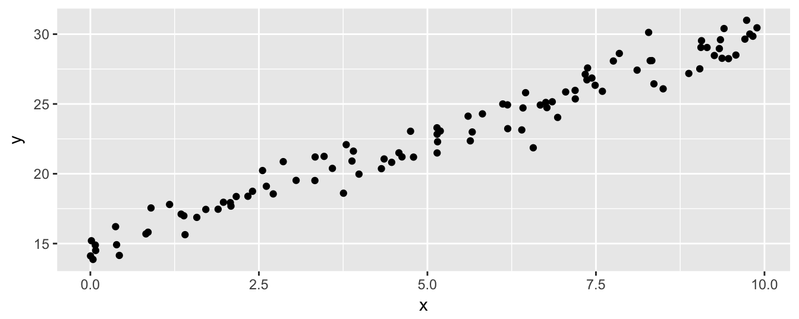
If a model is a function, and training a model produces that function from known x and y data, a training function might have this general form:
train_model <- function(x, y) {
predictor <- function(new_x) {
return(4)
}
return(predictor)
}Here, predictor is the model function (or, if you will, the “model”). Notice that it takes some new_x (to produce predictions for) and returns some predicted values, here just 4. To train a model on our x and y, we call the train_model function and then call the resulting model function on some new x data.
model <- train_model(x1, y1) # get a model function trained on x1 and y1
predictions <- model(c(3, 4)) # call the model function to get predictions for x = c(3, 4)
print(predictions)## [1] 4The prediction of 4 isn’t that useful. Let’s adjust the training so that the predictions are the mean of the training y values:
train_model <- function(x, y) {
mean_y <- mean(y) # Compute mean_y as part of training process
predictor <- function(new_x) {
return(mean_y) # The model function will return it as a prediction
}
return(predictor)
}Now this is fun–because the predictor function is created locally within train_model, it has access to the variables that are defined in the scope of train_model when it was called, and can use them whenever (or wherever) it is called, even after it is returned; train_model is thus a closure, as well as a higher-order function since it returns a function.
Now if we run our test, we see that we get the mean of the y values supplied during training.
model <- train_model(x1, y1)
predictions <- model(c(3, 4))
print(predictions) # predictions are now computed from the training y data## [1] 22.84191This is alright, though since we are asking for predictions for two x values, we should return two predictions. In general, we want the predictor function to return \(n\) predictions for \(n\) x values; we’ll use the rep function to produce a vector of the right length.
train_model <- function(x, y) {
mean_y <- mean(y)
predictor <- function(new_x) {
return(rep(mean_y, length(new_x))) # give back as many predictions as asked for
}
return(predictor)
}
model <- train_model(x1, y1)
predictions <- model(c(3, 4))
print(predictions)## [1] 22.84191 22.84191Now we can produce predictions for all of the original x data, and see how the results of the model (blue) compare to the actual values (black).
model <- train_model(x1, y1)
yhat <- model(x1)
# a data frame with columns for the original x1 and y1 data, and the predictions
plot_df <- data.frame(x1, y1, yhat)
ggplot(plot_df) +
geom_point(aes(x = x1, y = y1)) +
geom_point(aes(x = x1, y = yhat), color = "blue") +
scale_x_continuous(name = "x") +
scale_y_continuous(name = "y")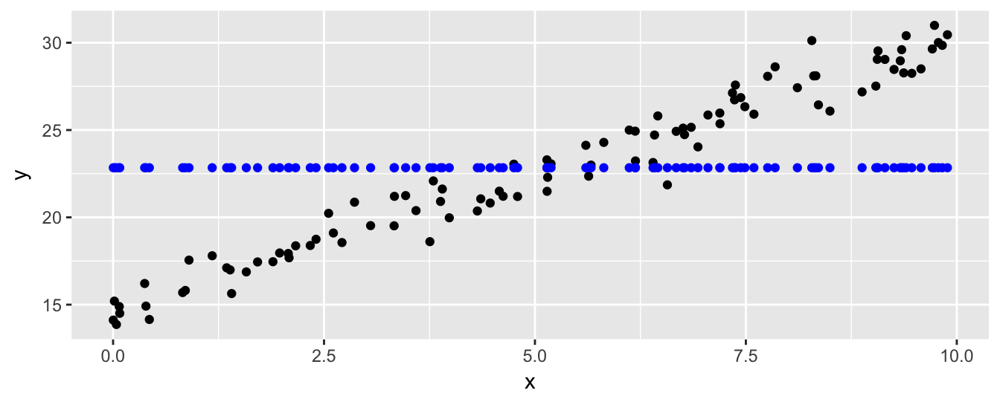
As machine learning algorithms go, this is pretty basic. But it provides a model (see, there we go again) for building machine learning models that we can expand on.
Linear Model
Although R includes an lm() function for computing linear model coefficients (and a predict() function for predicting values with that model), let’s write our own linear model based on the ideas above.
Since we’ll be using this function as a base for other models, we’ll make sure it can produce reasonable predictions in edge cases, such as when length(x) == 0 (e.g. if x <- c()), or length(new_x) == 0, or if there is only one distinct x value (making the appropriate slope difficult to determine). Let’s start by handling these cases first; if x has no data, the model function should simply return NA for each entry in new_x.
train_lm <- function(x, y) {
if(length(x) == 0) {
predictor <- function(new_x) {
return(rep(NA, length(new_x)))
}
return(predictor)
}
# (train_lm) to be continued ...Still working within the train_lm function, if there is only one unique x value, then the slope is 0 and the intercept is the mean of the y values (slope isn’t well-defined, but we don’t want return an NA result just due to that). If there are more than one unique x value, we can update the slope and intercept based on the convenient formulas here.
However, in order to allow for some investigations later, we’re going to do this optionally, based on the status of a global USE_SLOPE variable.1 When USE_SLOPE is FALSE, the predictions will just be the mean of the y values as in the case above.
Whatever slope and intercept are, the predictor function uses them to produce predictions for a given new_x.
# ... continued (train_lm)
slope <- 0
intercept <- mean(y)
if(length(unique(x)) > 1 & USE_SLOPE) {
n <- length(x)
slope <- (n * sum(x * y) - sum(x) * sum(y)) /
(n * sum(x ^ 2) - sum(x) ^ 2)
intercept <- sum(y) / n - slope * sum(x) / n
}
predictor <- function(new_x) {
predictions <- intercept + slope * new_x
return(predictions)
}
return(predictor)
}Let’s again visualize the data and results of model predictions. We’ve colored the original points black, the predictions not using a slope term in dark blue, and those using a slope in orange.
USE_SLOPE <- FALSE
model <- train_lm(x1, y1)
yhat_noslope <- model(x1)
USE_SLOPE <- TRUE
model <- train_lm(x1, y1)
yhat_slope <- model(x1)
# a data frame with columns for the original x1 and y1 data, and the predictions
plot_df <- data.frame(x1, y1, yhat_noslope, yhat_slope)
ggplot(plot_df) +
geom_point(aes(x = x1, y = y1)) +
geom_point(aes(x = x1, y = yhat_noslope), color = "blue") +
geom_point(aes(x = x1, y = yhat_slope), color = "orange") +
scale_x_continuous(name = "x") +
scale_y_continuous(name = "y")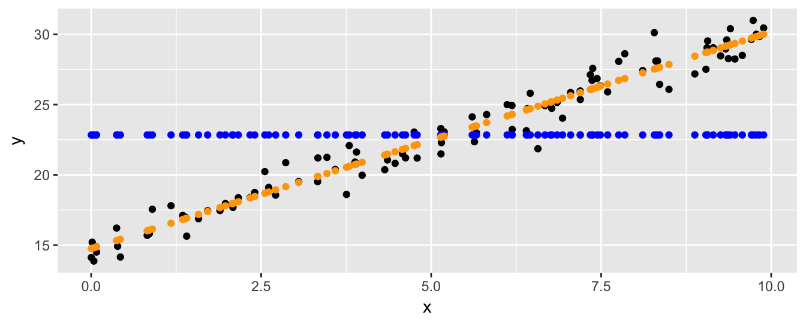
Split Linear Models
As we alluded to above, more sophisticated models can be built from simpler models by splitting the data into pieces (say two), and building a different model based on each piece. If the data are “nice” then it may well be that each piece is accurately predicted by a simple linear model, whereas all of the data may not be.
A basic operation, then, is the “split.” Given a training set x and y, we split it into two pieces—which we’ll call “left” and “right”—by picking some threshold for x and putting all entries (both \(x\) and corresponding \(y\) values) where x <= threshold in the left piece, and all the rest in the other. One basic linear model can then be trained on each piece, and used for making predictions. Presumably, the left model will be better at predicting new_x values that are less than or equal to threshold, and the right model will be better at predicting the rest.
Thus, the new_x values will need to be similarly split, and the results of the two models will need to be aggregated into a single set of predictions.
We’ll start with a train_split_lm function taking three parameters: x and y as before, and also a threshold which will be used to split the original x and y into pieces. First though, such a split only makes sense if there are at least two unique x values. If this isn’t the case, we’ll just fall back to using our basic train_lm. In fact, if the number of x values is small (say less than 6), then there’s probably not enough data for a split to be helpful, so we’ll fall back to train_lm in that case as well. Note that this function returns a model function just as the the train_lm function does; in fact in this case it’s just returning the result of train_lm directly.
train_split_lm <- function(x, y, threshold) {
if(length(unique(x)) < 2 | length(x) < 6) {
return(train_lm(x, y))
}
# (train_split_lm) to be continued ...If there’s enough data to split up, we generate two subsets of x and y: xleft and yleft corresponding to data where x values are less than or equal to threshold, and xright and yright corresponding to the rest. On each of these we train a linear model from above. (Notice that if threshold is equal to or larger than the largest x value, then xright and yright will be empty, hence the need for train_lm to be robust to empty training inputs.)
# ... continued (train_split_lm)
xleft <- x[x <= threshold]
yleft <- y[x <= threshold]
model_left <- train_lm(xleft, yleft)
xright <- x[x > threshold]
yright <- y[x > threshold]
model_right <- train_lm(xright, yright)
# (train_split_lm) to be continued ...The prediction function will make use of these two models to produce a set of predictions. We’ll have both models produce predictions for all values of new_x, but in the final answer we’ll only include the predictions from model_left where new_x values were less than or equal to the threshold, since that is the range of x values that the left model was trained on. Similarly for model_right.
# ... continued (train_split_lm)
predictor <- function(new_x) {
preditions_left <- model_left(new_x) # get predictions from left model
preditions_right <- model_right(new_x) # get predictions from right model
predictions <- rep(0, length(new_x)) # an initial set of 0s for final predictions
predictions[new_x <= threshold] <- preditions_left[new_x <= threshold] # set some predictions from left model
predictions[new_x > threshold] <- preditions_right[new_x > threshold] # set other predictions from right model
return(predictions)
}
return(predictor)
}Let’s try it by generating some new x and y training data that isn’t so linear, and producing a split model with threshold of 2.
x2 <- runif(100, min = 0, max = pi)
y2 <- 5 * sin(x2 + 0.3) + rnorm(100, mean = 0, sd = 0.4)
USE_SLOPE <- TRUE
model <- train_split_lm(x2, y2, threshold = 2)
yhat <- model(x2)
plot_df <- data.frame(x2, y2, yhat)
ggplot(plot_df) +
geom_point(aes(x = x2, y = y2)) +
geom_point(aes(x = x2, y = yhat), color = "blue") +
scale_x_continuous(name = "x") +
scale_y_continuous(name = "y")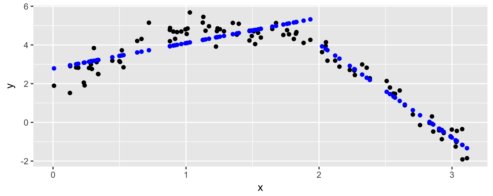
There’s a discontinuity where the two models meet at \(x = 2\), where the predictions for x values left of the split come from the left model, and the rest come from the right model.
The next step is to find the best splitting threshold, where we’ll define “best” to mean “minimizes prediction error for the training data.” More explicitly, we say a split is good if the resulting split model produces yhat predictions that are similar overall to the actual y values.
There are lots of potential ways to measure prediction error, including the sum of absolute error (abbreviated SAE, mathematically \(\sum_{i}|y_i - \hat{y}_i|\), or in code sum(y - yhat)), sum of squared error (SSE, \(\sum_{i}(y_i - \hat{y}_i)^2\), sum((y - yhat) ^ 2)), or even maximum absolute error (\(\max_i|y_i - \hat{y}_i|\), max(abs(y - yhat))). We’ll use the ever-popular SSE function, though there is some rather beautiful math relating both SAE and SSE to a common gradient-descent process (which is discussed in the article mentioned above).
sse <- function(y, yhat) {
error <- y - yhat
sum_sq_error <- sum(error ^ 2)
return(sum_sq_error)
}Now we can compute the SSE by comparing the true y values to the predicted yhat values.
print(sse(y2, yhat))## [1] 32.30874The optimal splitting threshold will be the one that generates a model minimizing this value. We needn’t check an infinite number of possible thresholds though: if we suppose that x is sorted, then any threshold in between two neighboring x values will produce the same SSE value. (Consider that the error value above wouldn’t have changed with any threshold resulting in the same data split.) So, we only need to check each unique x value as a possible threshold.
Let’s write a function that considers each potential threshold (from the set of unique x values), computes the error produced by creating a split model with that threshold, and keeps track of the best threshold seen before returning it. We use a small local helper function threshold_to_error to compute the error for a threshold by building a model and testing it.2
compute_optimal_split <- function(x, y) {
threshold_to_error <- function(t) {
model <- train_split_lm(x, y, t)
error <- sse(y, model(x)) # we want the SSE of the model's predictions compared to the actual values
return(error)
}
best_threshold <- Inf
best_error <- Inf
# look at each potential threshold; if it produces a smaller error, store it
for(threshold in unique(x)) {
error <- threshold_to_error(threshold)
if(error < best_error) {
best_error <- error
best_threshold <- threshold
}
}
return(best_threshold)
}Now we can write a train_optimal_split_lm that combines the two functions above to produce an optimal split-model. First it determines the best threshold, then it gets a model using that threshold and returns it.
train_optimal_split_lm <- function(x, y) {
best_threshold <- compute_optimal_split(x, y)
model <- train_split_lm(x, y, best_threshold)
return(model)
}Let’s try it on our data from above.
USE_SLOPE <- TRUE
model <- train_optimal_split_lm(x2, y2)
yhat <- model(x2)
plot_df <- data.frame(x2, y2, yhat)
ggplot(plot_df) +
geom_point(aes(x = x2, y = y2)) +
geom_point(aes(x = x2, y = yhat), color = "blue") +
scale_x_continuous(name = "x") +
scale_y_continuous(name = "y")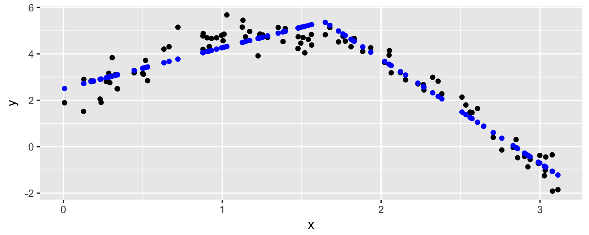
Looks like the best split, the one that minimizes the overall SSE error, is found at around \(x = 1.6\).
Multiple Variables, Regression Trees
Our next task is to predict y values from multiple input vectors x1, x2, etc. Consider this small example of a data frame with x1 and x2 columns, and a dependent y vector with some complicated relationship to x1 and x2.
x1_values <- seq(-1, 2, length.out = 30)
x2_values <- seq(-0.5, 2.5, length.out = 30)
# data frame of predictor variables; all combinations of x1_values and x2_values
df_x <- expand.grid(x1 = x1_values, x2 = x2_values)
# the y response vector depends on both
y <- cos(0.8*df_x$x1 + 0.2*df_x$x2) ^ 3 + cos(df_x$x2) ^ 3
# we'll center the y vector to a mean of 0 for illustration
y <- y - mean(y)
# a data frame of x1, x2, and y
train_data <- data.frame(df_x, y)
ggplot(train_data) +
geom_tile(aes(x = x1, y = x2, fill = y, color = y)) +
geom_contour(aes(x = x1, y = x2, z = y), bins = 10) +
coord_equal() +
scale_fill_gradient2(low = "purple4", high = "orange3") +
scale_color_gradient2(low = "purple4", high = "orange3") 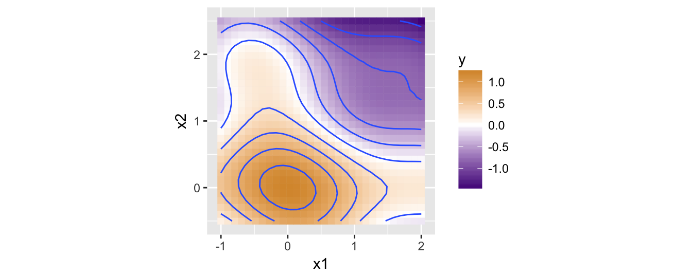
print(head(train_data))## x1 x2 y
## 1 -1.0000000 -0.5 0.1298706
## 2 -0.8965517 -0.5 0.2100254
## 3 -0.7931034 -0.5 0.2984929
## 4 -0.6896552 -0.5 0.3922154
## 5 -0.5862069 -0.5 0.4876052
## 6 -0.4827586 -0.5 0.5807501In order to predict the y values, we’ll need a training function that can work with dataframe inputs. Let’s start small with a train_df_index_base–this function will take a df_x containing columns of predictor variables, a y vector as before, and an index parameter. All this function will do is extract the specified indexth column (calling it x_i) and build a linear model on it from above, ignoring all the other columns.
We have to be careful though: the predictor function should also take a dataframe input, but to run the model it needs to also extract the new indexth column and predict on that.
train_df_index_base <- function(df_x, y, index) {
x_i <- df_x[, index]
model <- train_lm(x_i, y)
predictor <- function(new_df_x) {
new_x_i <- new_df_x[, index]
return(model(new_x_i))
}
return(predictor)
}Now we can work on the heart of the regression-tree algorithm: find a column and corresponding threshold that splits the dataset into two similar parts, do the split, and train models on each subset. All in all very similar to the splitting above, except now we’ve got multiple column options to consider splitting with.
In the next figure we suppose x3 is the best column to split on, and we’ve sorted the table and y values according to this column for illustration. To find a good splitting point we can use our compute_optimal_split function on that column and the y values. Then, rather than just splitting that column (and the y data) into left and right pieces, we split the entire dataset. Note that this leaves x3 as a column in each piece, allowing for future potential splits on that column again!
Note that even if we know x3 is the right column to split on, using compute_optimal_split on x3 alone might not compute the optimal split point for the whole dataframe. It may be that some other threshold will allow the “left” and “right” models to perform even better, depending on what they decide to do with their own data. Finding such a “globally-optimal” split would require considering all possible combinations of split points, of which there are far, far too many. Still, finding a good splitting column and a good “local” split works well in practice.

Let’s suppose that we do know the best column to split on (specified by an index variable), and we wish to implement the above in a train_df_index function. We’ll start by defining the function parameters and computing the best split point for the specified column.
As with train_split_lm, if the number of unique entries in x_i is too few, then splitting doesn’t make sense and we just call train_df_index_base. (Not train_lm, because our prediction function must take a dataframe input, rather than a vector; train_df_index_base handles this conversion.) Otherwise, we’ll compute the best threshold for the identified column.
train_df_index <- function(df_x, y, index) {
x_i <- df_x[, index]
if(length(unique(x_i)) < 2 | length(x_i) < 6) {
return(train_df_index_base(df_x, y, index))
}
threshold <- compute_optimal_split(x_i, y)
# (train_df_index) to be continued ...Next we’ll extract the “left” and “right” datasets; for left_df_x we want all rows where the x_i entries are less than the threshold.
# ... continued (train_df_index)
left_df_x <- df_x[x_i <= threshold, ]
left_y <- y[x_i <= threshold]
right_df_x <- df_x[x_i > threshold, ]
right_y <- y[x_i > threshold]
# (train_df_index) to be continued ...Now we need to train two models, model_left and model_right, on these two datasets. However, we have an issue–we don’t know which column will be best to split these on, nor do we have a function that determines this. Let’s defer to our future selves to figure that one out:
# ... continued (train_df_index)
# TODO: write a train_df function that computes the best index/column to split on and does so
model_left <- train_df(left_df_x, left_y)
model_right <- train_df(right_df_x, right_y)
# (train_df_index) to be continued ...Assuming we manage to figure that out, we’ll have two models that we can use for prediction, so we can write our predictor function and return it. Given a new_df_x it generates predictions from both model_left and model_right, and uses the index and computed threshold to determine which model should be consulted for which predictions (since model_left was only trained on data where the indexth column was less than threshold, we should only pay attention to its predictions where that is true as well).
# ... continued (train_df_index)
predictor <- function(new_df_x) {
predictions_left <- model_left(new_df_x) # have model_left predict for all new inputs
predictions_right <- model_right(new_df_x) # have model_right predict for all new inputs
new_x_i <- new_df_x[, index] # grab the index'th column
predictions <- rep(0, length(new_x_i))
predictions[new_x_i <= threshold] <- predictions_left[new_x_i <= threshold]
predictions[new_x_i > threshold] <- predictions_right[new_x_i > threshold]
return(predictions)
}
return(predictor)
}Let’s turn our attention to our TODO. We need to create a train_df function that figures out which column index is the best to split on. From there it can just call train_df_index. This is also the function that we’ll call to analyze data, since a-priori we won’t know which column is the best first choice.
How do we compute the best column to split on? We just train an train_optimal_split_lm on each column, and keep the one with the lowest error. As with choosing a threshold, this will identify a good column to split on, but not necessarily the best overall; some other column choice might actually produce better results (again depending what the model_left and model_right built by train_df_index do with their pieces), but this strategy is efficient and works well in practice.
train_df <- function(df_x, y) {
# helper function:
# given a column x (vector), train an optimal split on just that column and
# return the SSE error (ignoring other columns)
error_func <- function(x) {
model <- train_optimal_split_lm(x, y)
return(sse(y, model(x)))
}
best_index <- Inf
best_error <- Inf
# check each column's SSE (via the error_func() helper function)
# and note the best-performing one
for(index in 1:ncol(df_x)) {
x_i <- df_x[ , index] # grab index'th column
error <- error_func(x_i) # how good is it by itself?
if(error < best_error) {
best_index <- index
best_error <- error
}
}
return(train_df_index(df_x, y, best_index))
}We are so close. Notice that train_df calls train_df_index, which in turn calls train_df (twice), which in turn calls train_df_index, and so on. Eventually one of two things will happen: either the datasets will be split small enough that train_df_index doesn’t call train_df but instead “bottoms out” and calls train_df_index_base, or we’ll get an infinite recursion error (also known as a stack overflow error, produced by a chain of functions calling other functions and not returning before we run out of memory). The latter shouldn’t happen, if we’ve been careful to ensure that each split reduces the number of rows in each piece, getting closer to bottoming out each time.
Still, it would be wise to limit how many times this process can occur. We can do so by adding a depth parameter to these functions; if depth is 0 then train_df_index will bottom out no matter how many rows are left. (Note that if depth = 0 then no splits will be performed, because train_df_index_base simply calls train_lm.)
train_df_index <- function(df_x, y, index, depth) { # new depth parmaeter
x_i <- df_x[, index]
if(length(unique(x_i)) < 2 | length(x_i) < 6 | depth == 0) { # if it's 0, use just that column
return(train_df_index_base(df_x, y, index))
}
# (train_df_index) to be continued ...When train_df_index calls train_df, it will pass the depth information along but reduced by 1, thereby making each call to train_df_index one step closer to ending the chains of calls.
# ... continued (train_df_index)
model_left <- train_df(left_df_x, left_y, depth - 1) # pass depth along, decreased
model_right <- train_df(right_df_x, right_y, depth - 1) # pass depth along, decreased
# (train_df_index) to be continued ...This means our train_df will also need a depth parameter, which we’ll default to 0, but which the user can set higher to perform splits-on-splits-on-splits.
train_df <- function(df_x, y, depth = 0) { # what depth do you want to train to?
# ...
# yada yada yada
# ...
return(train_df_index(df_x, y, best_index, depth)) # pass it along
}Whew! Before we explore this, let’s see what happens when we try to predict our earlier y values with depth = 1 (allowing a single split on one of the columns), using both USE_SLOPE <- TRUE and USE_SLOPE <- FALSE. This plot shows the model predictions for the various values of x1 and x2, as well as the original y data in the contour plot.
# generate predictions without allowing slope
USE_SLOPE <- FALSE
model_noslope <- train_df(df_x, y, depth = 1)
yhat_noslope <- model_noslope(df_x)
# and using slope
USE_SLOPE <- TRUE
model_slope <- train_df(df_x, y, depth = 1)
yhat_slope <- model_slope(df_x)
# data frame with columns for x1, x2, y, yhat_noslope, and yhat_slope
all_data <- data.frame(df_x, y, yhat_noslope, yhat_slope)
# gather it for proper plotting
all_data_toplot <- tidyr::gather(all_data, "model_type", "yhat", yhat_noslope, yhat_slope)
ggplot(all_data_toplot) +
geom_tile(aes(x = x1, y = x2, fill = yhat, color = yhat)) +
geom_contour(aes(x = x1, y = x2, z = y), bins = 10) +
coord_equal() +
scale_fill_gradient2(low = "purple4", high = "orange3") +
scale_color_gradient2(low = "purple4", high = "orange3") +
facet_grid(. ~ model_type)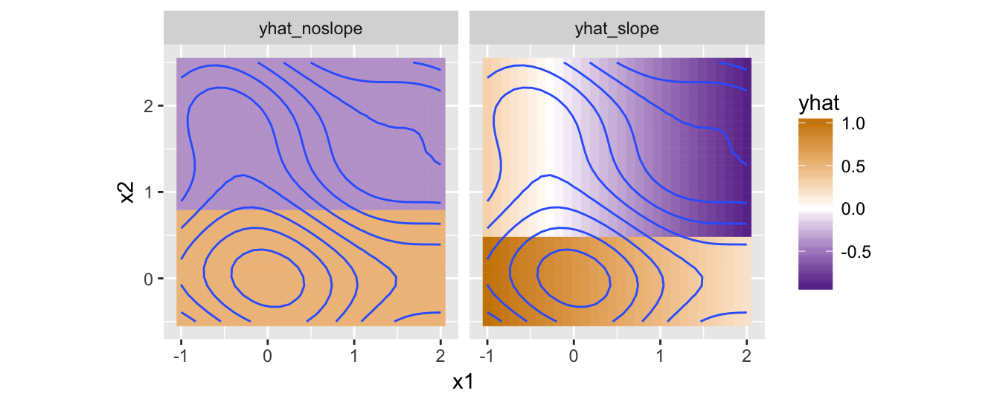
Both models have decided to split on the x2 column, but while the no-slope-allowed model found the best split at approximately 0.8 (with predictions on each side being the mean of the y values in that region), the slope-allowed model found it’s best split around 0.5, with a decreasing linear model over x1 to the right (of the split, so the top half of the plot), and a different decreasing linear model on x1 to the left (bottom).
The slope-allowed model produces slightly more accurate predictions overall, as illustrated here by plotting the differences between these predictions and the actual y values (using a different color-scale to emphasize that we’re looking at the difference).
ggplot(all_data_toplot) +
geom_tile(aes(x = x1, y = x2, fill = yhat - y, color = yhat - y)) +
geom_contour(aes(x = x1, y = x2, z = y), bins = 10) +
coord_equal() +
scale_fill_gradient2(low = "darkred", high = "darkblue") +
scale_color_gradient2(low = "darkred", high = "darkblue") +
facet_grid(. ~ model_type)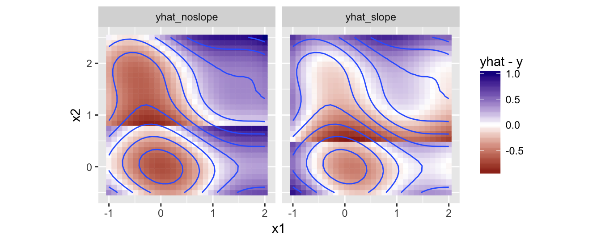
Nevertheless, the behavior of our model is better illustrated with USE_SLOPE <- FALSE. Here’s a plot disallowing slopes, but with increasing depth values.
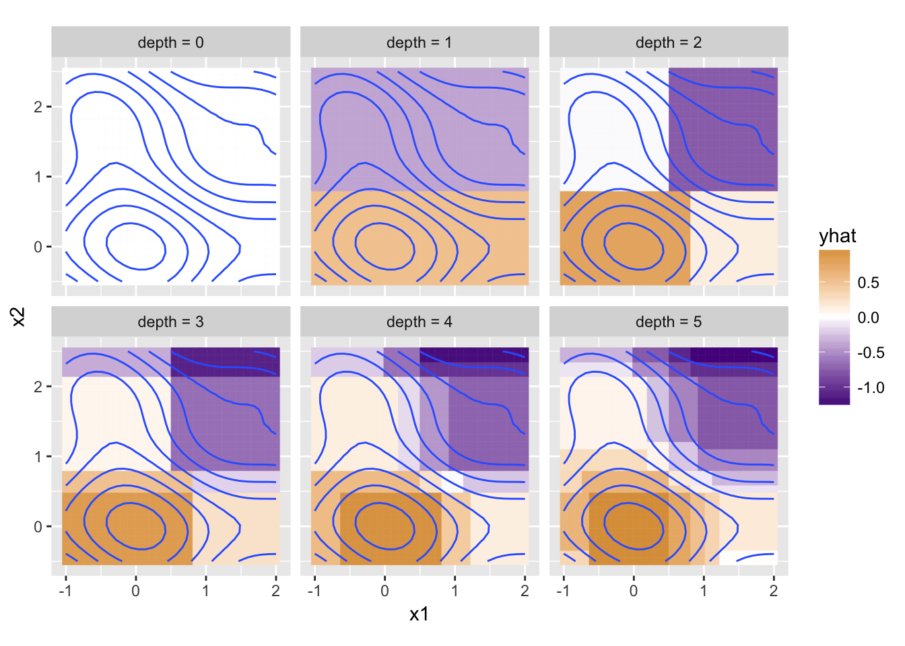
Now this is interesting. The depth = 0 model makes no splits, and so predicts just the average of all y values for any input x1 and x2. For depth = 1, the first split is on x2 at about 0.8 as above; this leaves a subset of data for the left model (bottom), and for the right model (top). At the next depth level (depth = 2), the left (bottom) model has decided to split its x1 column at about 0.75, but the right (top) model splits at about 0.5. Each of these four subsets are independently split at the next allowed depth for the depth = 3 panel, and so on. For each subset, the model chooses the best column to split on, and the best point to split, which naturally tends to divide the areas into regions of similarity (without splits) and rapid change (where splits are likely to occur). Here’s the difference plot for depth = 5 with and without slope.
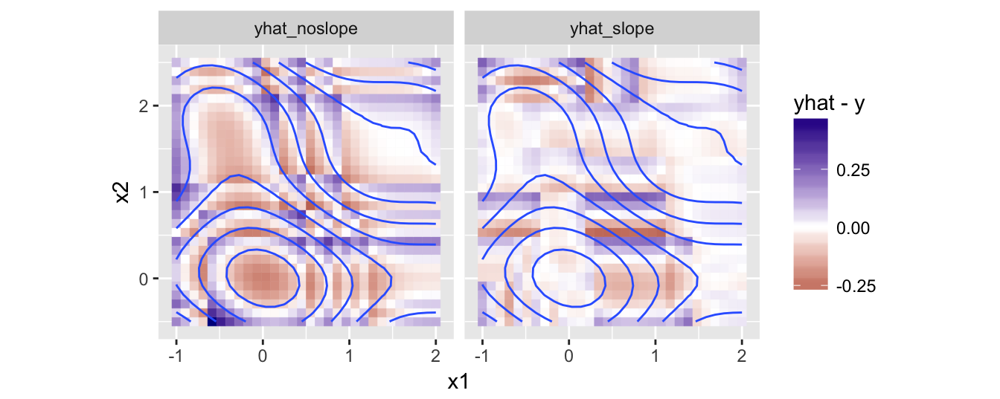
Discrete Columns?
Our train_df models capture the basic idea of regression trees: consider potential columns to split on, split the data into pieces based on some criteria, and train a model on each piece. When making predictions, we split the new data in a similar way before predicting (or, as we’ve done here, combine the predictions afterward).3
Regression trees are a type of decision tree, where the identified thresholds and columns produce a branching decision-making process for each input example (hence the names “left”, “right”, and “depth”).

So far our method works only with columns storing numeric values. What if some columns were discrete, with values such as "r", "s", and "l"? The same general strategy applies: we would consider splitting the data into two or more pieces based on this column, train a model on each piece, and utilize their predictions on new_df_x data.
One way to perform such a split is to identify the most-homogeneous group and split that out. Future splits can then worry about the other piece.

Alternatively, one could split into multiple pieces and train a different model on each piece. Note that any dataset with only a single entry for a column (such as in “left” above and “l”, “r”, “s” below) wouldn’t further split on that column, because there’s no improvement to be gained compared to splitting on some other column.

We’re not going to implement either of these solutions here. The former would be interesting, in that it would encourage us to generalize the notion of “binary split” to handle both discrete and continuous variables, but this would add yet another level of abstraction. The latter is certainly doable, but fairly tedious.4
Bootstrap Aggregating (Bagging)
Thus far we’ve only tried to predict non-noisy y data. In real datasets some noise is common, and ideally our model won’t be negatively affected. Let’s generate a ynoised version of the original y data and plot the results, but leave the contours representing the original y data.
ynoised <- y + rnorm(length(y), mean = 0, sd = 0.5)
all_data_toplot <- data.frame(df_x, y, ynoised) # dataframe with columns x1, x2, y, ynoised
ggplot(all_data_toplot) +
geom_tile(aes(x = x1, y = x2, fill = ynoised, color = ynoised)) +
geom_contour(aes(x = x1, y = x2, z = y), bins = 10) +
coord_equal() +
scale_fill_gradient2(low = "purple4", high = "orange3") +
scale_color_gradient2(low = "purple4", high = "orange3")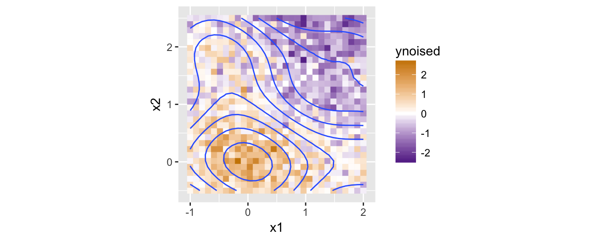
Now let’s see what happens if we train models of increasing depths as we did above on this noisier data.
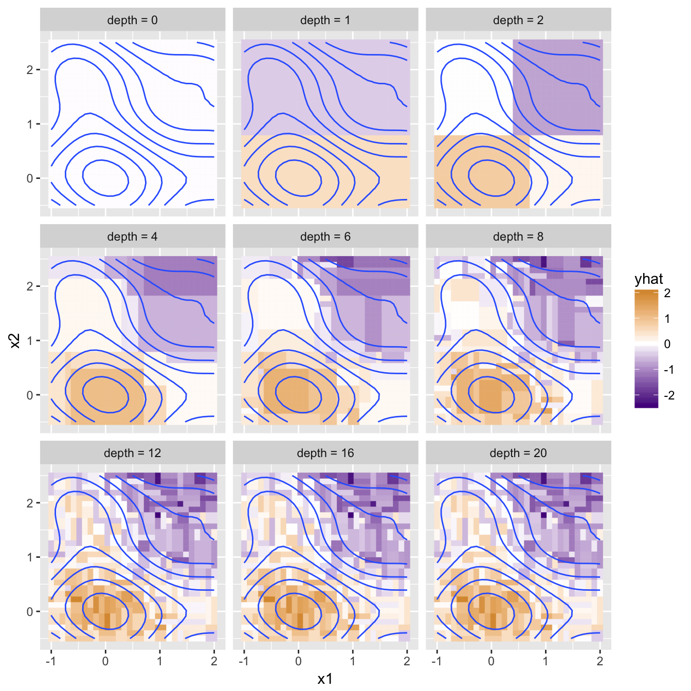
Ideally, our model would capture the underlying trend in the data, but not the specific set of noise on top. Based on the above plot, it seems the depth = 8 model provides a good balance of representing the underlying trend accurately while not producing noisy predictions. The depth = 2 model is under-trained, or “underfit” to the training data, while the depth = 20 model is overfit. Overfitting is a major challenge in machine learning because most methods (like regression trees) are subject to overfitting, and avoiding it is tricky business.
There are a few ways we could avoid overfitting with our trees. Many of these have to do with the “stopping criteria” for producing a split. Currently we stop splitting dataframes when either the number of training rows is small, or depth is 0 (length(unique(x_i)) < 2 | length(x_i) < 6 | depth == 0 in train_df_index). If depth is large, then we are likely to continue to split the until we stop because there’s only a few datapoints to train on–as a result, the noise present in those datapoints affects the models significantly. Additional or alternative stopping criteria might be when the standard deviation of y is below some threshold, or the SSE for a basic linear model is below some threshold.
Overfitting is often a model-size problem, where the “size” of something like our regression trees is how many nodes are in the decision tree (about \(2^{depth}\) for our trees). If we wanted the code itself to determine what the correct depth is, we could incorporate model-size into the error calculation–perhaps we add to a model’s SSE an amount related to the number of splits it uses to make predictions. This idea–limiting the number of parameters or “size” of a model to avoid overfitting–is known as regularization.
Bootstrap Aggregating, or Bagging, is another method to avoid overfitting. We start by writing a function that can produce a “bootstrap sample” of the training data, randomly selected with replacement. It’s common to generate bootstrap samples of the same size as the original data, so if the original df_x and y have \(n\) entries, then the sample will also have \(n\) entries. Our function will return a list with a new, randomly sampled version of df_x and y.
get_bootstrap_sample <- function(df_x, y) {
n <- length(y)
sample_indices <- sample(1:n, size = n, replace = TRUE) # sample the potential indices with replacement
sample_df_x <- df_x[sample_indices, ] # grab from the df_x data those rows
sample_y <- y[sample_indices] # and from the y data those entries
return(list(sample_df_x, sample_y))
}Due to sampling with replacement, some original datapoints won’t be present at all, and some will be present multiple times. If we generate multiple such samples, we can train a different model on each. Because the samples are generated with replacement their statistical properties should be similar to the original data, but individual datapoints will only be available to some models. To generate predictions, we just average (aggregate) the predictions from all of these models.
Our train_df_bootstrap function will take the same parameters as train_df, and an additional num_bootstraps parameter. The first task is to generate a list of models, each trained on a different bootstrap of df_x and y.
train_df_bootstrap <- function(df_x, y, depth = 0, num_bootstraps = 1) {
models_list <- as.list(rep(NA, num_bootstraps)) # a list of length num_bootstraps (will be a list of models)
for(i in 1:num_bootstraps) {
bootstrap <- get_bootstrap_sample(df_x, y) # generate bootstrap and pull out sampled df_x and y
bootstrap_df_x <- bootstrap[[1]]
bootstrap_y <- bootstrap[[2]]
model <- train_df(bootstrap_df_x, bootstrap_y, depth) # train a model
models_list[[i]] <- model # store it in the list
}
# (train_df_bootstrap) to be continued ...The predictor function will need to collect predictions for new_df_x from each of the models, which it will store in a matrix with each prediction vector as a column. For aggregating the predictions (averaging the columns), we use apply which calls a given function (mean in this case) over each row (MARGIN = 1) to produce the aggregated predictions vector.
# ... continued (train_df_bootstrap)
predictor <- function(new_df_x) {
all_predictions <- matrix(0, nrow = nrow(new_df_x), ncol = num_bootstraps) # num_predictions X num_models
for(i in 1:num_bootstraps) {
model <- models_list[[i]] # get i'th model
model_predictions <- model(new_df_x)
all_predictions[, i] <- model_predictions # store predictions in i'th column
}
predictions <- apply(all_predictions, MARGIN = 1, mean) # average columns
return(predictions)
}
return(predictor)
}Let’s see how the predictions look for a few different values of depth and num_bootstraps.
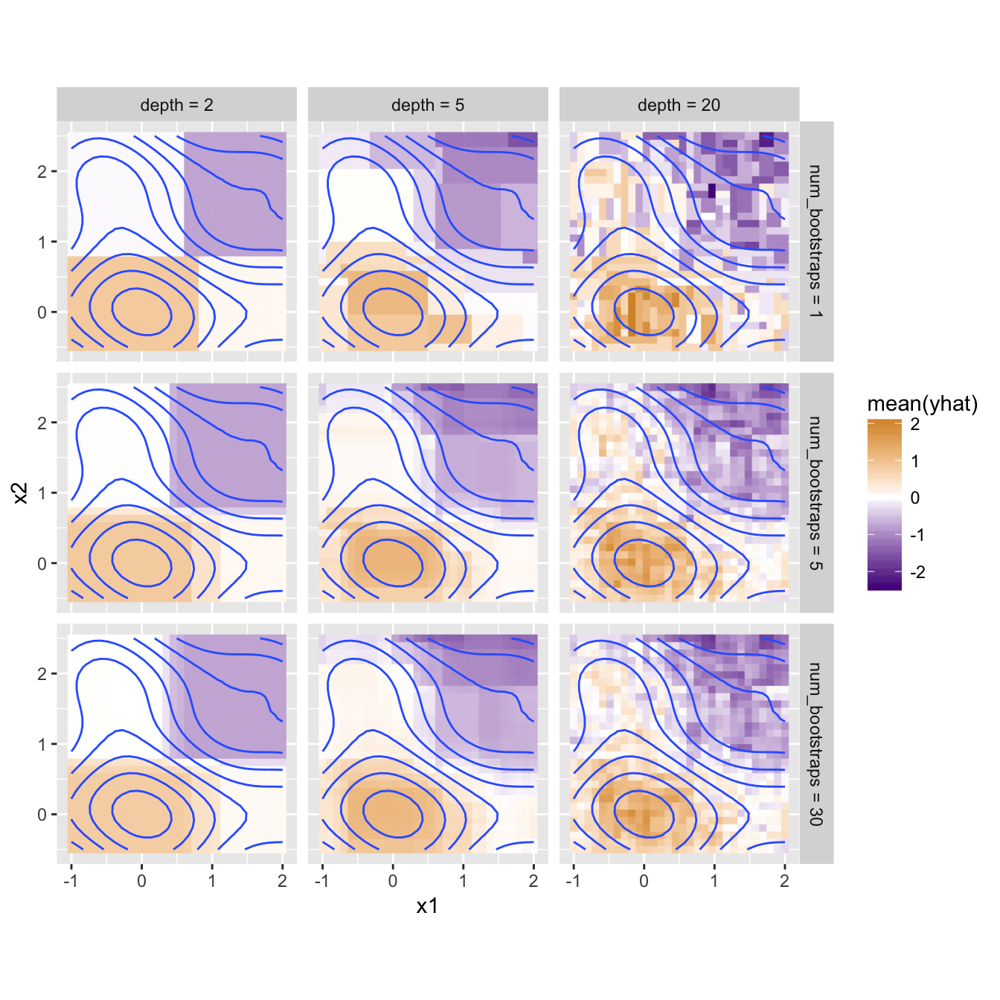
This looks like an improvement: with larger numbers of bootstrapped models much of the noise of the predictions is washed out. The aggregated depth = 5 (and even depth = 2) models also provide smoother gradations in their predictions.
An interesting feature of bootstrap aggregating is that we can consider the diversity of the bootstrapped models’ predictions. Here’s the same figure, except instead of using mean to aggregate the predictions, we use sd to compute the standard deviation of predictions. With num_bootstraps = 1 the standard deviation is undefined, but for larger numbers of bootstraps the standard deviation is larger where the model “regions” meet. These correspond to areas near split points, which can vary depending on the random subset of data chosen by the various bootstrap models.
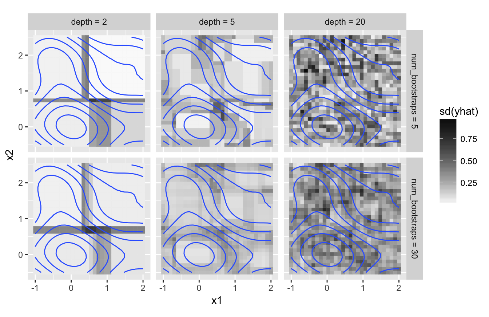
Wrapup
As the footnotes note, this little machine-learning framework is far from efficient. (The thought of a dplyr- or split()-based method is intriguing, I wish I’d thought of it earlier!) Still, I think it’s a fun exploration of “modeling” and machine-learning in a functional paradigm. This is far from novel: the creation of lisp in the 1950’s is tightly coupled with early AI research, and a fair amount of modern ML work happens in languages like clojure.5 Joel Grus explores similar very cool things in Python.
The recursive modeling used by our regression trees is similar to the ensemble-based modeling of bootstrap aggregating: a regression tree model confers with two sub-models (unless it didn’t split, in which case it confers with a basic train_lm model), while a bootstrap aggregated model combines predictions from num_bootstraps sub-models. Next time, we’ll see that both random forests and gradient-boosting machines (GBMs) can be described in the same way!
Shhh, don’t tell anyone. The alternative would be to give
train_lmause_slopeparameter, but then all functions that depend ontrain_lmwill also need ause_slopeparameter to pass on, even though this is the only function where we’ll want to adjust this behavior.↩I’m using a for-loop here for clarity, though some may find a more functional alternative preferable:
thresholds <- unique(x); errors <- lapply(thresholds, error_func); best_threshold <- thresholds[[which.min(errors)]]. This version doesn’t handle emptyxvectors well, so would also need an explicit check for this. I’m not worried about the for-loop being slow because it isn’t appending to any vector or list. Nevertheless, many of the techniques used in this post are not particularly fast. Libraries like tree and xgboost are much better for real-life data analysis.↩This prediction-combining strategy fits our formulation well, but is very inefficient because we end up making lots of predictions on all of the data, while only keeping a few. Similarly, training the models in this way isn’t efficient either, since there are lots of copies of the original data floating around (consider that even within a single call to
train_df_indexwe make two copies, one for the data indf_xand one for the data acrossleft_df_xandright_df_x).↩This is largely because we’re insisting on returning
yhatpredictions in corresponding order ofdf_xinput rows. An alternative would be to remove this restriction and recursively break data into logical groups viadplyrorsplit(). These would also be more efficient, with fewer copies of data being made.↩Have you seen tensorflow.js? Check out Daniel Shiffman’s deep learning-in-the-browser videos.↩